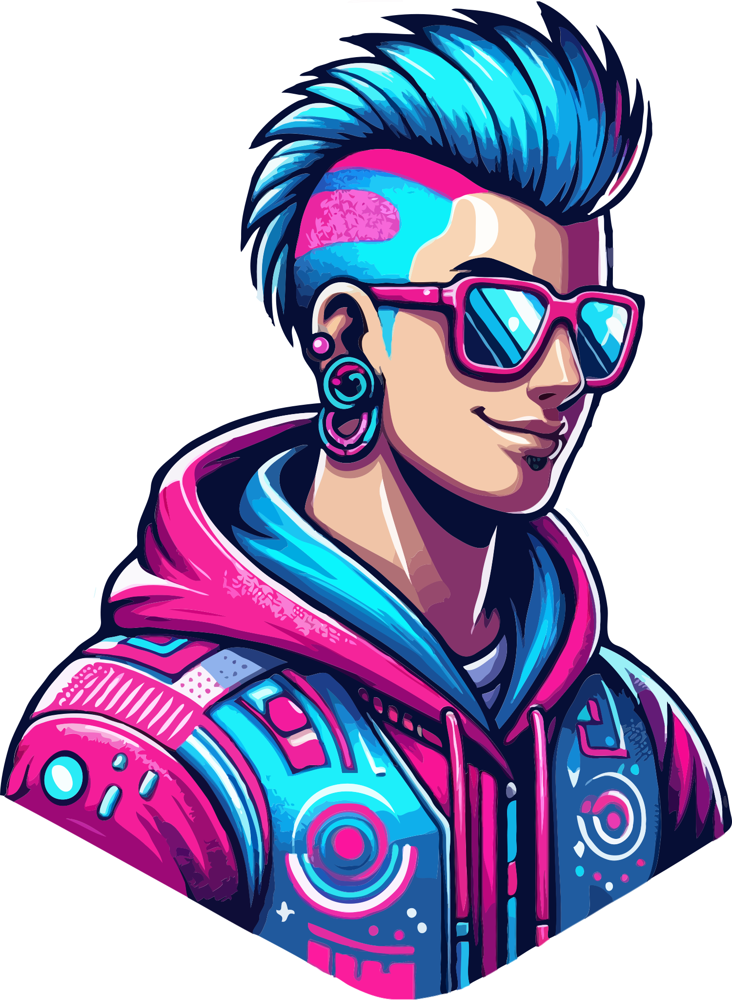
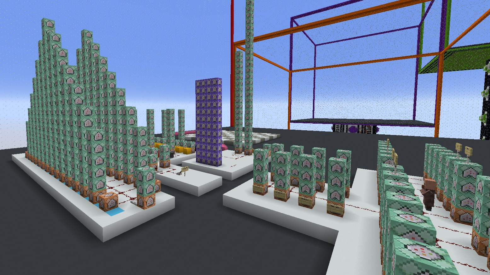
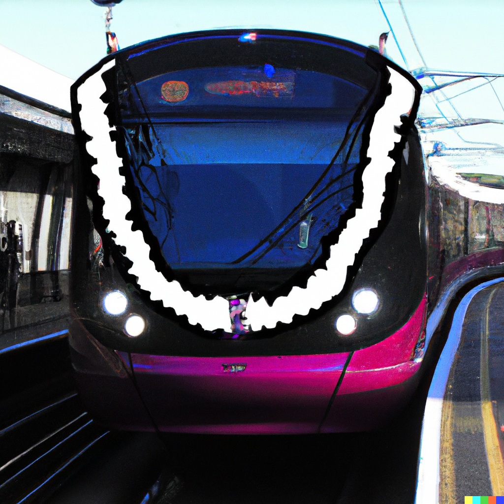
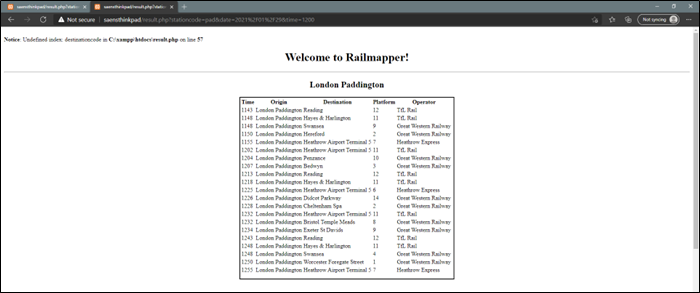

Saenooos is a Java programmer and data meddler with a keen interest in analysing the interactions between humans and computer systems. Currently in their final year of a Computer Science & Artificial Intelligence undergraduate degree, Saenooos aspires to conduct research into human-centered system design optimization...
Saenooos is a Java programmer and data meddler with a keen interest in analysing the interactions between humans and computer systems. Currently in their final year of a Computer Science & Artificial Intelligence undergraduate degree, Saenooos aspires to conduct research into human-centered system design optimization...

Utilising Minecraft mechanics to solve complex mathematical search-related problems.

I occasionally write articles about railways and you can find some of my thoughts here. I've mostly written about Crossrail and the Great Eastern Main Line, both in the UK.

Railmapper was a basic railway display application I created for my A-Level Computer Science Coursework in 2020...
I'll add some more cool things I've created over the new few months, stay tuned!